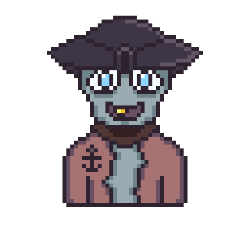
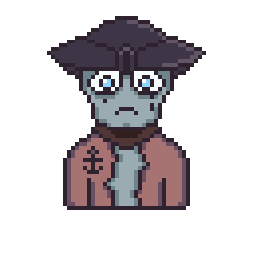
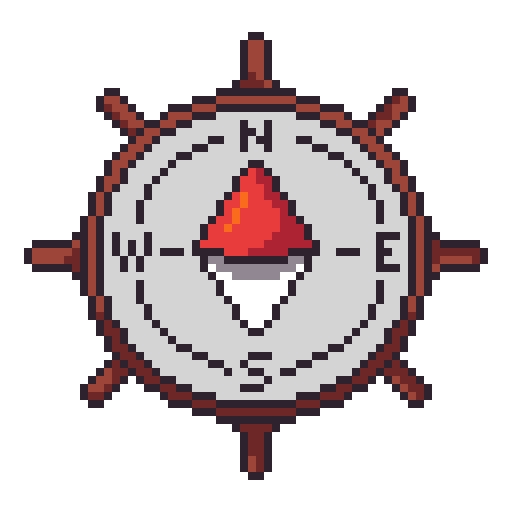

Overview
We decided to make a 'Coral Reef Management' game, in which the player would be assigned to take care of a coral reef and its' condition by making decisions that would impact it throughout the game.
I was respondible for:
- Pixel Art & Design of the in-game Areas
- UI Elements such as Icons, buttons, Logos etc.
- Also ideating and brainstorming on Concepts for the characters & UI/UX Design.


These are the 4 planned Areas of the Game, each represented by its' unique Icon.


This was my concept for 1 of the Characters in our game. Since it would be present in the 'Pirtae Ship' area, it only made sense for it to be a pirate.
Additionally, I proposed to make each character with 2 Facial Expressions, letting the player know whether their decision would have a good/bad impact on the character's habitat.

Another Sprite I was prod of was the 'Compas Icon' that in my opinion, fit very well within the Game overall aesthetic.
A lot more sprites are present in the actual game.